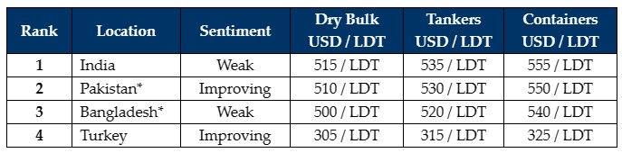

inWeekly Demolition Reports29/11/2023
Sub continent pricing and sentiments remain stranded in the low 500s/LDT and for certain units even below, as we meanderaimlessly towards the end of the year with very little serious and enticing levels to induce either owners or cash buyers to sell.
Of course LCs and available financing remain a big issue in both the Pakistan and Bangladesh markets, and there are only very tentative offers emanating as a result, on mostly smaller LDT vessels such is the precarious nature of their respective economies.
Container and dry bulk markets continue to provide the still fairly limited supply of vessels for recycling, and one sale from each sector was concluded this week – probably for the more reliable shores of Alang (although the ‘as is’ vessel could end up anywhere if a particular buyer emerges).
The big news of the last few weeks has concerned the momentous announcement that the EU are considering once again to put select yards in Alang on to the approved EU list of recycling facilities – a big step given that there are so few approved EU facilities presently in Europe or elsewhere with sufficient capacity to take any serious tonnage.
Bearing in mind all in the industry are expecting a bumper few years of sales ahead (with BIMCO stating they expect DOUBLE the recycling volumes in the next 10 years compared to the previous 10 years), this is indeed a welcome and important development.
In other significant news, Pakistan has finally announced that it is now ready and seeking to ratify the Hong Kong Convention (HKC) in what will be a big step for yard owners there to finally upgrade their facilities in line with much improved Alang and Chittagong yards.
For week 47 of 2023, GMS demo rankings / pricing for the week are as below.

📄 Download PDF: 24-November-2023.pdfSource: GMS,Inc. ,https://www.gmsinc.net/gms_new/index.php/web